Strategy
Infeed strategy
The following are defined in the infeed strategy area:
-
The profile of the tool movements via a profile definition (standard profiles, free profiles).
-
The type of cut for the tool (Ascending, Descending, Ascending and descending)
-
The infeed mode between the end point of the first milling path and the start point of the following milling path.
The options that are available in the Profile definition, Type of cut and Infeed mode areas are explained in the following sections using examples.
If a profile has not been defined, the defined boundary (strategy: Boundary curve) or the boundary for the defined milling surfaces (strategy: Milling surfaces) is used automatically as the profile.
When the X axis and Y axis options are used, the X or Y axis of the frame is used as the guide curve.
With all the other options, the guide curves are freely definable, which allows the milling paths to be optimally adapted to the surface.
Machining angle: Enter the angle of rotation required for machining.
 |
The machining and infeed directions are based on the guide curves. This setting is the standard setting.
| 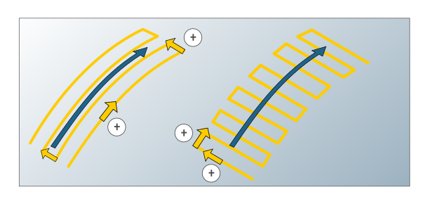 |
Reverse direction
Both the milling and infeed direction can be customized in order to make optimal adjustments to the milling paths to the surface.
Milling path: Reverses the machining direction.
Horizontal stepover: Reverses the infeed direction.
Via the selected directions the starting point of machining is defined as well.
X axis, Y axis
The machining area is to be limited via a boundary. The guide curve for machining is the X axis. In the default setting, the first milling path runs in the positive X direction and the first infeed movement is executed to the left of this, that is, in the positive Y direction.
| 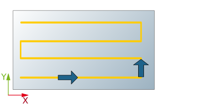 |
Reverse direction
Infeed strategy X axis (A), Y axis (B), Zigzag direct machining.
(1) Without reversal, (2) Milling path reversed, (3) Horizontal stepover reversed, (4) Both directions reversed.
 |
 |
XY optimization
Areas that are not optimally machined with the selected profile direction (X or Y axis) can be optionally machined in a further operation in the opposite profile direction. The XY optimization can either be carried out without considering the surface steepness (option: Standard) or dependent on the slope (option: Slope mode).
Example: The following options are enabled in the example:
The machining area was limited by means of Milling surfaces and an automatic milling surface extension.
| 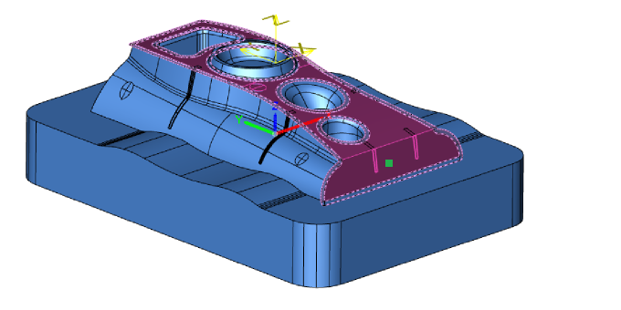 |
The X axis option is activated as the infeed strategy.
The → option is enabled by default for the → function. The slope angle for the surface steepness is set to 50° (option: To).
Off: No XY optimization takes place.
| 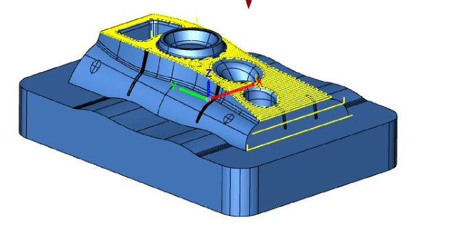 |
Standard: In order to completely machine even the steep areas, an additional operation is optionally carried out in the opposite direction to the selected profile direction. Slope-dependent machining is not possible. Before is used to perform the optimization first, that is, machining takes place in the opposite direction to the selected profile direction and then in the standard direction, using the After option, the optimization is performed after the standard machining.
| 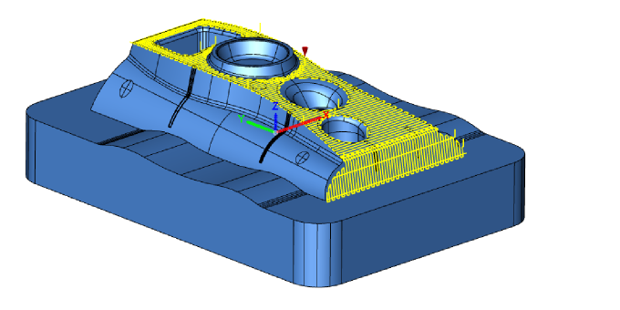 |
If the Only optimization option is selected, no machining takes place in the standard direction.
| 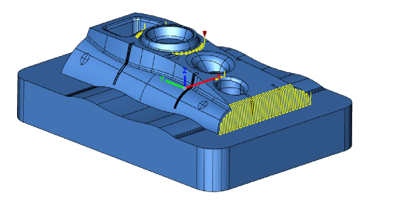 |
Slope mode: As in the case of the standard option, an additional operation can be optionally defined. Here, machining is carried out dependent on the surface slope, which is measured orthogonally to the machining direction.
In the Basic path, any pitches are accepted in the machining direction, orthogonally only up to the angle that is defined in the To option. Steeply sloping or rising surfaces transverse to the machining direction are therefore not machined in this step. In the optimization step, the areas omitted in the basic toolpath are machined with a separate toolpath, so that complete machining is easily achieved.
Optimization either takes place before (option: Before) or after the machining (option: After).
| 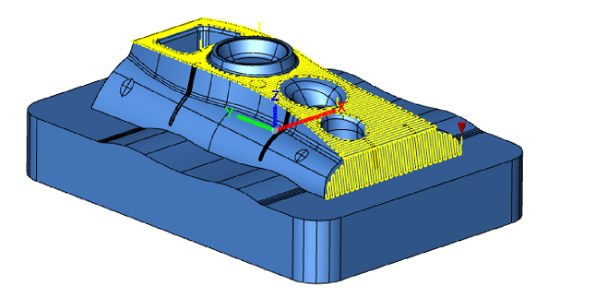 |
Only optimization: Machining of the steep surface areas.
| 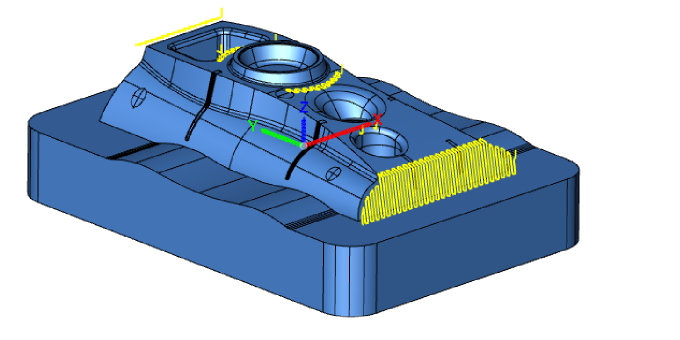 |
When the Basic path only option is used, no optimization is performed, which means that the machining can also be split into two different jobs.
| 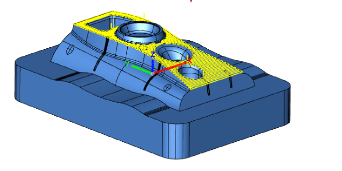 |
Machining takes place in the transition area between steep and non-steep areas always with a smooth overlap (the Smooth overlap option is enabled by default).
Machining mode
The machining of surfaces with a large slope angle frequently leads to unsatisfactory results during Profile Finishing as a large amount of rest material remains. To save machining time, steep surface areas can be optionally excluded from machining, in dependence on their slope, by specifying a maximum surface slope angle.
Slope mode: Enable if slope-dependent machining should take place and use From to define the lower limit and To to define the upper limit of the surface slope of the surfaces to be machined.
Note
Slope-dependent machining is only possible with bullnose end mills and ball mills.
Grouping toolpaths: Machining areas are combined and the number of fast travel movements is reduced, particularly in the case of nested boundaries or in slope-dependent machining, if several milling areas have been defined.
(1) Option not activated, (2) Option activated.
| 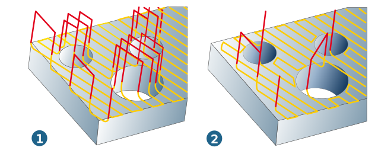 |
Smooth overlap: Only available for slope dependent machining. Enable if you want the toolpaths of flat and steep areas to overlap. The overlap (1) ensures a very high level of surface quality in the transition area between flat and steep surfaces. (2) Transition area activated, (3) Transition area not activated.
The overlap area is visualized in the graphic for illustrative purposes only. This area is not graphically highlighted in the model.
(4) 3D Profile Finishing, (5) 3D Z Level Shape Finishing
| 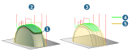 |
Offset
A free profile is used as guide curve (1). The toolpaths are computed according to the horizontal stepover and are equidistant to the course and length of the guide curve. For open guide curves, the machining area is limited with a boundary (2). In the default setting, the first milling path runs in the direction of the guide curve and the first infeed movement is executed to the left of the first milling path.
| 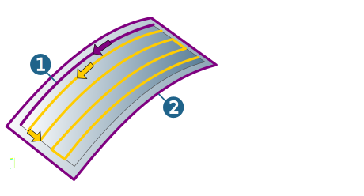 |
With closed guide curves, machining is from the outside in (1). In the default setting, it is from the inside out (2). If the boundary is a closed guide curve, you can execute 3D pocketing.
| 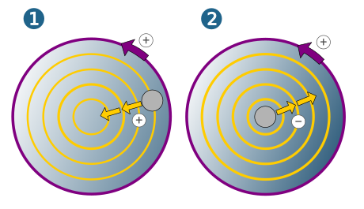 |
Normal
Profiles are calculated perpendicular to the guide curve (1). The limiting boundary determines the profile length (2). In the default setting, the first milling path runs in the direction of the normal to the left of the guide curve and the horizontal stepover is executed in the direction of the guide curve. Particularly suitable for rest material areas in steep surfaces or recessed grounds.
A strong bend in the guide curve can result in overlaps of the normal line profiles.
| 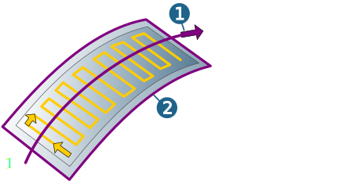 |
Ruled
Ruled profiles require two guide curves that do not intersect and that have the same direction.
Reverse direction
If the guide curves are in an opposed direction, reverse the direction of one guide curve using the 1st profile or 2nd profile option.
In the default setting, the first milling path runs from the inner (shorter) to the outer (longer) guide curve (1) and the horizontal stepover is applied to the outer (longer) guide curve (2).
| 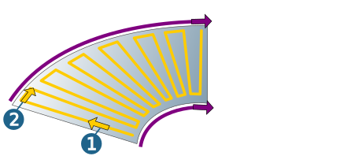 |
This type of machining defines a natural limitation between the two guide curves. In addition, a defined boundary limits the machining area.
Use the tool reference parameters (Boundary dialog page) to control the behavior of the tool at the guide curves. A boundary does not have to be defined.
Application areas: Finishing of corners, Machining of symmetrical parts.
If the internal guideline is defined as a point, and the outer guideline as a closed contour, machining is executed radially (1).
Flow profile
Two guide curves (1, 2), which do not intersect and that have the same direction, are to be defined as profiles. If the guide curves are in an opposed direction, reverse the direction of one guide curve.
 |
Reverse direction
If the guide curves are in an opposed direction, reverse the direction of one guide curve using the 1st profile or 2nd profile option.
In the case of closed curves, the start positions must be aligned, that is, are not displaced from one another. In the default setting, the first milling path runs on the inner (shorter) guide curve and the first infeed is executed to the left of the first milling path.
Synchronize toolpaths
synchronization lines (1, 2): Connection lines or curves between the two guide curves (3, 4) that influence the calculation of the distances on the inner guide curve. Surface machining can be controlled and the infeed (stepover) distance adjusted, via a variable arrangement of the synchronization lines.
| 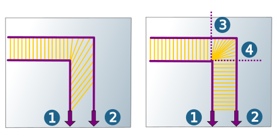 |
Guide curve
Machining on a guide curve or in a narrow strip parallel to a guide curve. Any 2D or 3D curves and splines can be used as guide curves. More than one guide curve are permitted per cycle. The guide curve is treated as the positive X axis.
| 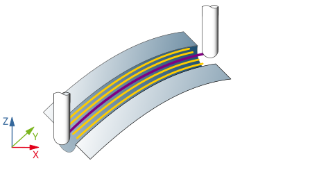 |
Offset area
Use the from and to parameters to define a positive (X+) or negative (X-) distance to the guide curve, within which machining will take place. If from and to are identical, only one path is machined.
Pre-machined pockets are finished with the pocket profile. Closed 3D contours can be used as the profile. One or more pocket profiles can be defined per cycle. When pocket profiles are inside one another, island detection is automatic.
Fillet radius: Changes in direction within the toolpaths are rounded with the specified radius.
Pocket profiles are always machined contour-parallel with climb or conventional milling.
Infeed direction
Use the Inside-out or Outside-in parameter to adapt the infeed direction to the contour to be machined.
Cutting mode
Use the Climb milling or Conventional milling parameter to adapt the cutting mode to the contour to be machined.
Pre-machined contour
Offset (1): Existing material width on the machining contour in connection with pre-machined pockets.
 |
Type of cut
When the type of cut is set to Ascending, upward cutting takes place. Application: Roughing close to the surface to remove material (allowance) from a preceding roughing operation (1).
When the type of cut is set to Descending, drill cutting takes place. Application: Recess machining of steep walls (2).
When the type of cut is set to Up and down, the milling path follows the surface (3) of the model. Standard method for Finishing. The type of cut does not apply to pocket profile.
 |
Infeed mode
The infeed mode describes the type of horizontal stepover between the end point of a milling path and the start point of the following path. The Infeed mode does not apply to the Pocket profile.
With the options Zigzag direct and Zigzag smooth, the machining direction changes after each passed profile. An approach macro is used for the infeed to the first milling path and a retract macro is used for retraction after the last milling path.
 |
Note
If the linear movement would cause damage to the workpiece, the system guides the tool with surface contact (no material being removed) around the workpiece.
Zigzag direct: If no return macro is enabled (1), the infeed movement is carried out on the shortest path in the machining feedrate (G1) on the surface. If a return macro is enabled (2), every retract and infeed movement is corrected by the selected retract and approach macro. Depending on the defined retract mode, the horizontal stepover occurs at the clearance distance in G1 or at the clearance plane in G0.
 |
Zigzag smooth: The infeed between the milling paths is the shape of loop. These loops reduce jolting and the mechanical load on the machine is reduced. This strategy is primarily intended for high-speed milling. The limiting boundary may be traversed when moving along the loops.
 |
With the Diagonal and Parallel options, the machining direction is always the same and defined by the profile direction. The horizontal stepover is performed relative to the defined retract mode to the security clearance in G1 or security plane in G0. Each retract and infeed movement is corrected by the selected approach and retract macro.
When the Diagonal option (1) is used, the infeed is diagonal from the end point to the next start point. When the Parallel (2) option is used, the tool initially retracts parallel to the generated milling path to the start point of the (vertical) infeed movement. This is followed by a horizontal stepover using the shortest distance possible.
 |